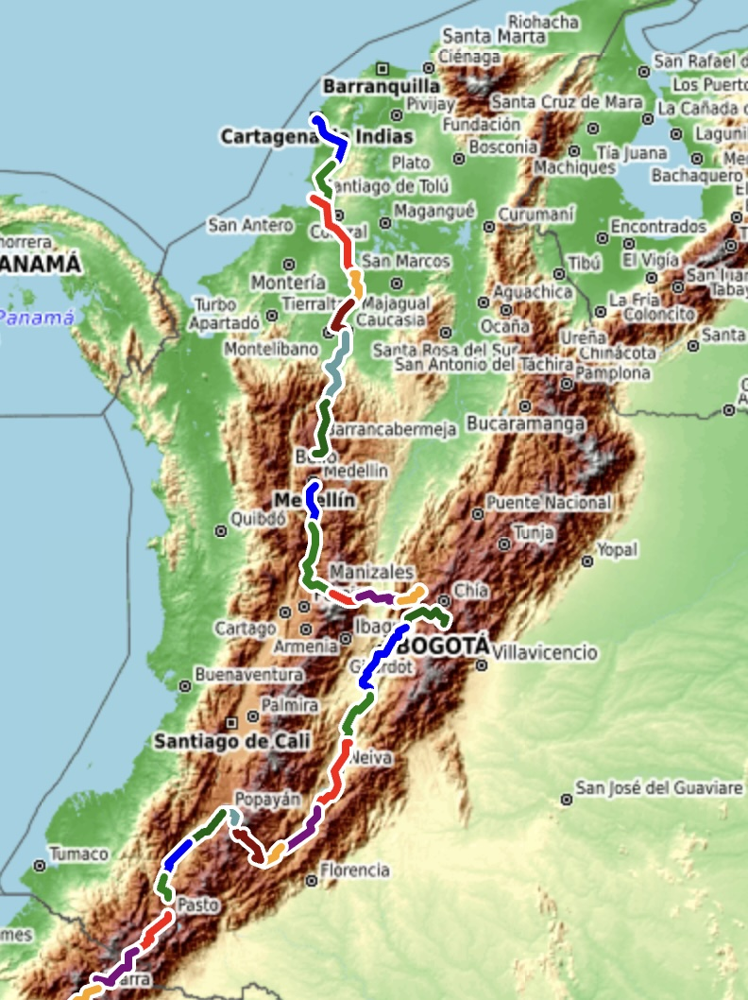

Colombia#
We spent a month riding across Colombia, from 30 June to 30 July 2024.
Markdown Syntax Figure 
Myst Image 75%
Myst Figure 80%
{kind=link}
Fig. 5 Rides Across Colombia (MystFig).#
markdown style myst figure 85%

Fig. 6 Rides Across Colombia (label only).#
Colombia’s diverse geography, shaped by three Andean Cordilleras, offers a stunning variety of landscapes. This cycling journey moves from the Caribbean Lowlands into the Cauca and Magdalena River Valleys, climbs through coffee-rich mountain ridges, and traverses high-altitude páramo before heading south to Ecuador.
A recurring theme emerges: bridges at daily minima, and passes marking transitions between watersheds. Rivers carve the land, defining the contours of the ride. Each block below highlights key geographic features, along with an interactive map of the actual routes ridden.
Block 1: Caribbean Lowlands - Cartagena to San Marcos#
Cartagena to San Marcos#
The journey begins on the warm, humid plains near the Caribbean. The early stages are relatively flat, winding through mangroves, wetlands, and tropical farmlands. As the route moves inland, the rolling terrain hints at the climbs to come.
Here’s the interactive map showing the actual routes ridden in Block 1:

**Block 2: Cauca River Valley and Andean Foothills **#
San Marcos to Medellin#
Bypassing the mud by boat in San Marcos, Colombia#

🎥 Watch on YouTube – by TDA Global Cycling
Leaving the coastal plains, the route follows the Cauca River Valley, a deep trench between the Western and Central Cordilleras. This section is marked by hot, flat riding along the river floodplain, followed by steep climbs into the Andean foothills. The daily minima align with Cauca River crossings, while the maxima bring cool mountain air and breathtaking views.
Here’s the interactive map showing the actual routes ridden in Block 2:

Block 3: The Coffee Highlands and Magdalena Watershed#
Medellin to Bogota#
Riders from the SiCLas Collective gave us a great sendoff on our way out of Medellin
Cycling Culture in Medellin#

🎥 Watch on YouTube – by TDA Global Cycling
This section moves into Colombia’s Coffee Axis, where ridges and valleys create an undulating rhythm. The route shifts from the Cauca River basin to the Magdalena River watershed, with each day featuring deep descents to tributaries, followed by grueling climbs into cloud forests and coffee plantations.
Here’s the interactive map showing the actual routes ridden in Block 3:

Block 4: Bogotá to the Tatacoa Desert#
Crossing the Eastern Cordillera, the tour reaches Bogotá before plunging into the Magdalena’s middle course. The descent from Bogotá into the valley is dramatic, giving way to warm, dry terrain. The route then moves through the Tatacoa Desert, a striking landscape shaped by millennia of water and wind erosion.
Here’s the interactive map showing the actual routes ridden in Block 4:

Block 5: The Colombian Massif and Magdalena Headwaters#
Approaching San Agustín, the tour enters the Colombian Massif, where the Magdalena River is born. Each stage weaves through narrow ridgelines and deep ravines, transitioning from humid highlands to the high-altitude páramo of Puracé National Park. The high points between valleys showcase the rugged, untamed nature of the region.
Here’s the interactive map showing the actual routes ridden in Block 5:

Closing Thoughts#
Colombia’s geography presents an ever-changing challenge—from the humid Caribbean lowlands to the high-altitude ridges of the Andes. Rivers, valleys, and mountain passes define the rhythm of the ride. Every bridge marks a low point, and every pass marks a transition, reinforcing the deep connection between the landscape and the cyclist’s journey.
The road now turns south, deeper into Ecuador, Peru, Bolivia, and beyond—each new stage offering its own valleys, rivers, and mountain passes to cross.
Next Steps#
Stay tuned for the next section of the journey: Crossing Ecuador’s Avenue of the Volcanoes 🚴♂️🌎.